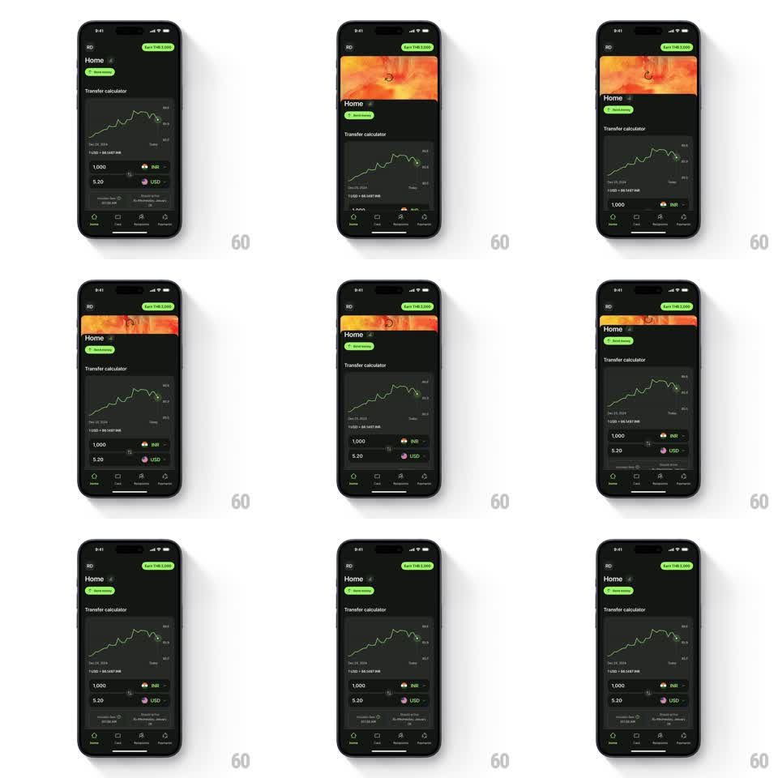

Media
Frame-by-frame

Rebuild this animation 1:1: Wise's pull-to-refresh - dragging down peels the home screen to reveal a bright orange marbled pattern, and the transfer calculator glides back up on release.

Rebuild this animation 1:1: Wise's pull-to-refresh - dragging down peels the home screen to reveal a bright orange marbled pattern, and the transfer calculator glides back up on release. ## Integration Integration: stack-agnostic spec - springs given as stiffness/damping, timed motions as duration + curve; map every value to your framework and animation library of choice. ## Scene Dark home screen: top balance row, a transfer calculator card with a rate chart and currency rows. Behind it lives a vivid orange/red marbled artwork, hidden until pulled. ## Motion spec Pattern: pull-to-refresh reveal, drag + spring-back. - Dragging down translates the whole content stack with the finger (1:1 for the first ~120px, then diminishing resistance). - The orange pattern is revealed from the top as the content moves down; the pattern itself parallax-shifts at ~0.5x the drag speed so it feels like a layer behind. - A small refresh glyph at the top center rotates with drag progress and starts spinning on release. - On release, the content springs back up (spring stiffness 220 damping 18) covering the pattern again. ## Calibration - The rubber-band falloff keeps the pull under ~40% of the screen height - do not let the pattern take over. - The spring-back has one soft overshoot; a dead ease loses the snap. ## Reduced motion Pull crossfades a thin pattern strip at the top; no parallax. ## Don't miss - The pattern is present at drag start (revealed, not faded) - it should feel like something the content was always covering. - Content returns in one motion with no secondary bounce of inner cards.